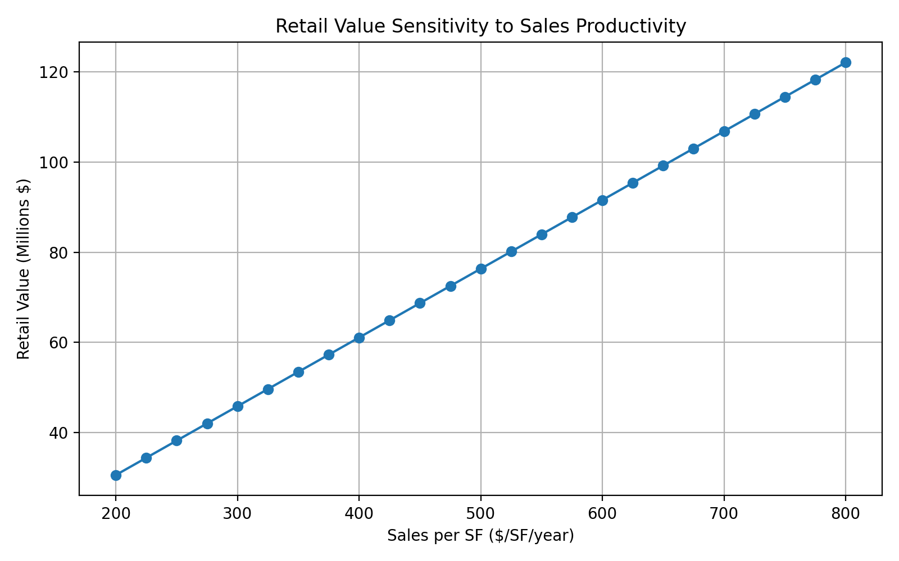

Retail development is financially fragile because its revenue depends heavily on foot traffic, occupancy, and surrounding economic activity. Small shifts in these conditions can quickly push retail projects into negative Residual Land Value, making standalone retail difficult to finance. Threshold logic helps explain when retail becomes viable: once demand catalysts such as housing, transit, or major employers generate enough activity, retail performance improves and can support development. As a result, retail often does not pencil independently and instead relies on cross-subsidy from higher-value uses, such as residential rent premiums in mixed-use projects, to produce positive net system value.
| Scenario | Retail RLV | System Gain/Loss | Viable? |
|---|---|---|---|
| Standalone | [↓] | [Loss] | [No] |
| Apartment Uplift | [Can be:↑or↓ as long as gain exceeds loss] | [Gain] | [Yes] |
| Catalyst | [↑] | [Gain] | [Yes] |
| Low Office Occupancy | [↓] | [Loss] | [No] |
Apartment rent uplift = Rational Retail becomes economically rational when the residential rent premium generated by on-site retail exceeds the negative retail Residual Land Value. In the model, a rent uplift of roughly $0.20 per square foot per month produces a $5.7M net system gain, offsetting the retail loss and making the project financially viable. This level of rent uplift is generally plausible in mixed-use developments where ground-floor retail improves amenities, walkability, and neighborhood activity. Industry benchmarks often estimate 8–10% rent premiums for apartments located in active mixed-use environments. When is public subsidy justified? Public subsidy may be justified when retail generates broader neighborhood benefits but market conditions are not yet strong enough to support it independently. In these cases, targeted support can help bridge the feasibility gap until surrounding density, foot traffic, and demand increase.

Public funds should support retail development when market demand is emerging but not yet strong enough for retail to be financially viable on its own. Investment is most appropriate in locations with clear demand catalysts such as new housing, transit infrastructure, or major employment centers that can generate sustained foot traffic. In these contexts, targeted public support can bridge the initial feasibility gap and help establish retail that contributes to long-term neighborhood vitality.